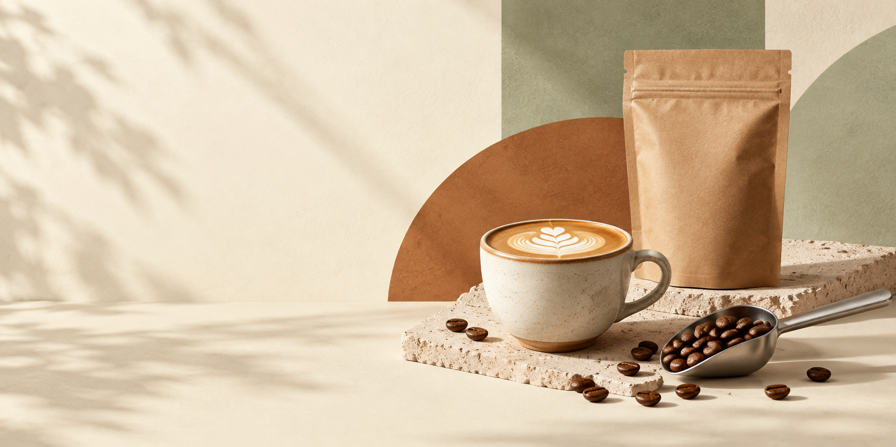

Para tomar.
Espresso, cappuccino y métodos filtrados. Tu manera de disfrutar el café.
ARTO · Café de especialidad en Rosario
Café, comida y un lugar para hacer una pausa.
Y si te da curiosidad, también para aprender.
La casa
Nos encontrás en Tucumán 1932. Café de especialidad, algo rico para acompañar y una mesa para quedarte un rato.
Podés venir por tu café de todos los días o descubrir uno nuevo. La conversación empieza en la barra.
Conocenos en Instagram
Lo simple, bien hecho.
De la barra
a tu mesa.

Pasá. Estás en ARTO.
Una charla, una merienda, un encuentro. Lo que pasa alrededor de la taza también importa.
Vení a conocernosFormación ARTO
De la curiosidad a la práctica. Cursos y talleres para empezar en el mundo del café o seguir explorándolo.
Consultá las próximas ediciones, los contenidos y la disponibilidad de cada capacitación.
Molienda, extracción y práctica.
El primer paso
Un acercamiento al café de especialidad y a los fundamentos del trabajo en barra. Para quienes quieren empezar desde cero.
Del origen del café a la taza: molienda, extracción de espresso, leche y fundamentos de barra.
Consultar próximas fechasLeche, pulso y una buena taza.
Técnica en la taza
Una invitación a trabajar la leche y el vertido. Conocé los principios que hay detrás de cada dibujo en la taza.
Explorá la texturización de la leche, la microespuma y su consistencia, para dar paso a las técnicas de vertido.
Consultar por el tallerTiempo, agua y proporciones.
Otras formas de preparar
Explorá la preparación manual y las variables que transforman una receta. Otra forma de conocer el café que tomás.
Descubrí cómo la molienda y las proporciones, el tiempo y la temperatura se encuentran en cada receta de extracción.
Consultar por el taller¿No sabés por dónde empezar?
Contanos qué te gustaría aprender.
Antes de venir
El curso inicial está pensado para quienes quieren comenzar. Para las demás capacitaciones, escribinos y te orientamos según tu experiencia.
Encontrás las convocatorias en @artocafe. También podés consultarnos por WhatsApp por nuevas ediciones y disponibilidad.
Sí. Pasá por Tucumán 1932 y pedí tu café para llevar en la barra.
Dónde estamos
Tucumán 1932Horarios
Consultá en Instagram los cambios de horario y feriados.